- Género
- Shooter vertical
- Jugadores
- 01
- Estado
- ¡Disponible!
1945. Un volcán despierta y de la lava surge una flota invasora. Pilota el último avión del escuadrón y vuela directo al infierno.
 HORIZONTE 64
HORIZONTE 64

Somos Horizonte 64, un estudio independiente de Latinoamérica. Hacemos juegos de arcade cortos e intensos, con paisajes de nuestra tierra, para jugar gratis en el navegador o en el celular.
¿Te gustan nuestros juegos? Invítanos un café y ayúdanos a crear el próximo.
Donar con PayPal Sobre nosotros >
1945. Un volcán despierta y de la lava surge una flota invasora. Pilota el último avión del escuadrón y vuela directo al infierno.
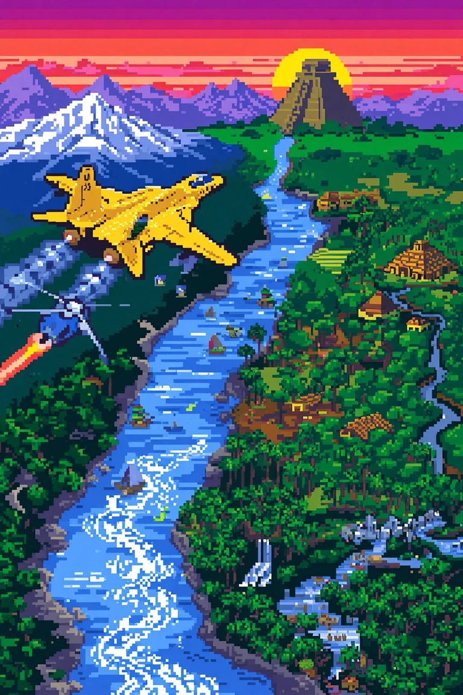
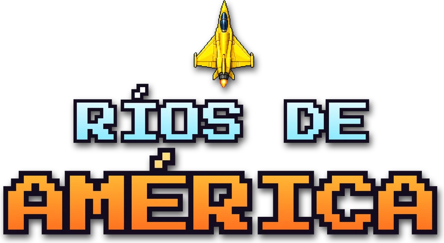
Patrulla aérea por 8 ríos de América, de sur a norte: el Baker en la Patagonia, el Paraná y las cataratas del Iguazú, el Pilcomayo en el Chaco, el Urubamba en el Valle Sagrado, el Amazonas, el Orinoco de los tepuyes, el Magdalena y el Usumacinta de los mayas. Vuela los puentes, dispara a barcos, helicópteros y jets, y carga combustible antes de quedarte seco. Se juega con un dedo o con el teclado.

Toca y despega. Pilota el Halcón por 11 secciones, de las montañas con cohetes a la caverna, el campo de meteoros, los ovnis, la ciudad y el laberinto de edificios, hasta la base enemiga para llevarte el botín. Vuela arrastrando el dedo: el láser y las bombas disparan solos. Destruye los estanques FUEL antes de quedarte sin combustible. Se juega con un dedo en el celular o con las flechas.
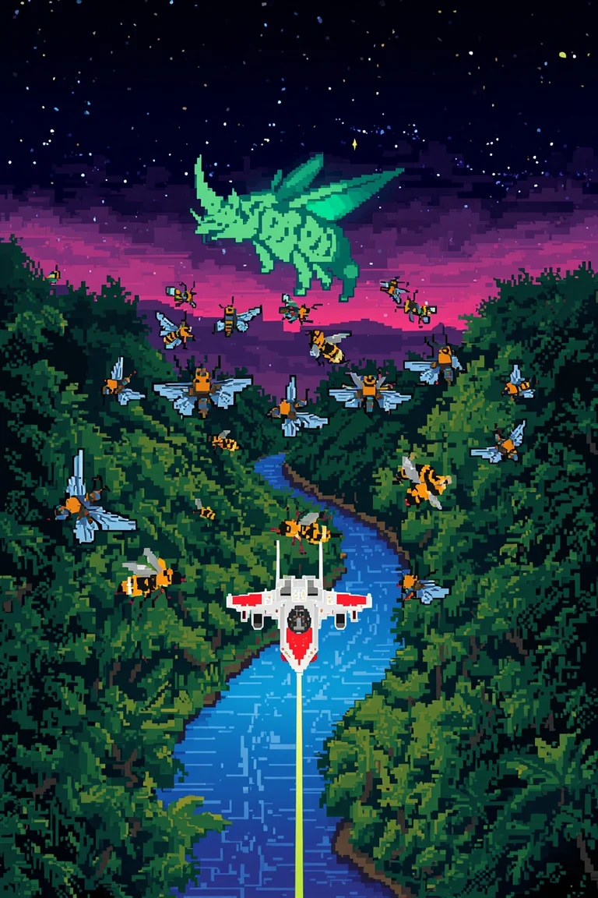
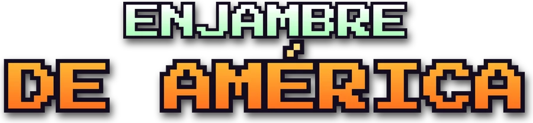
Insectos gigantes de Latinoamérica bajan del cielo en formación: abejorros, mariposas morpho y escarabajos jefe entran en oleadas, se ordenan arriba y se lanzan en picada contra tu nave. Cuidado con el rayo tractor del escarabajo: si te captura, derríbalo cuando baje y rescata tu nave para jugar con nave doble. Etapas de desafío con langostas, cocuyos, mosquitos y vinchucas, y una zona distinta en cada etapa: de la Amazonía a la Pampa, el Valle Central, Yucatán, los Llanos, el Altiplano, el Darién y el Valle del Cauca. En el celular arrastras el dedo y la nave dispara sola. Tabla de récords como en el arcade.
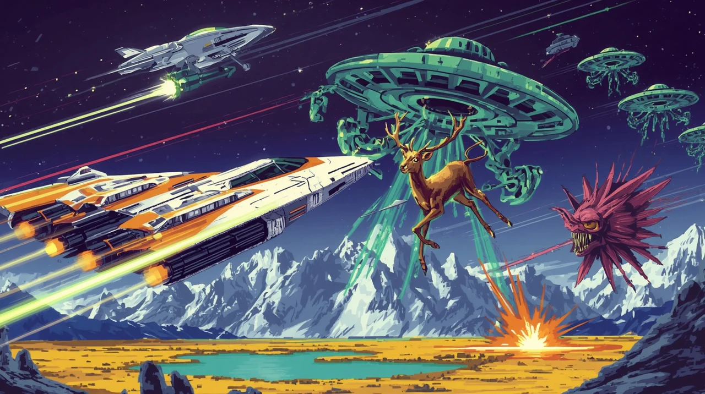
Toca y despega con la Patrulla Latina. Una flota de abductores bajó a llevarse a los animales de Latinoamérica: vuela de lado a lado por un mundo que da la vuelta, mira el radar, derriba a los abductores antes de que suban con su presa y atrapa en el aire a los que caen para dejarlos de vuelta en el suelo. Ocho zonas, cada una con su animal: los huemules de Torres del Paine, las llamas de Machu Picchu, los tapires del Amazonas, los flamencos de Uyuni, los coatíes del Iguazú, los jaguares de Tikal, las tortugas de Galápagos y los osos hormigueros del Roraima. Cuidado con los mutantes, las minas y los enjambres; si te rodean, suelta una ráfaga. Con un solo dedo la nave vuela y dispara; si te rodean, la ráfaga sale sola. Tabla de récords como en el arcade. Se juega en el celular o con el teclado.
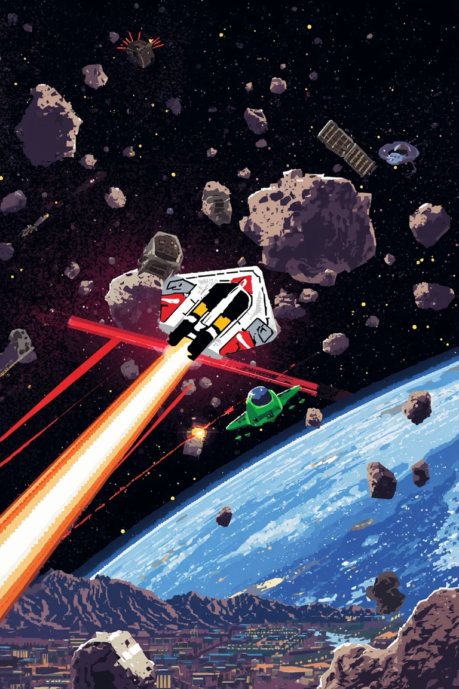
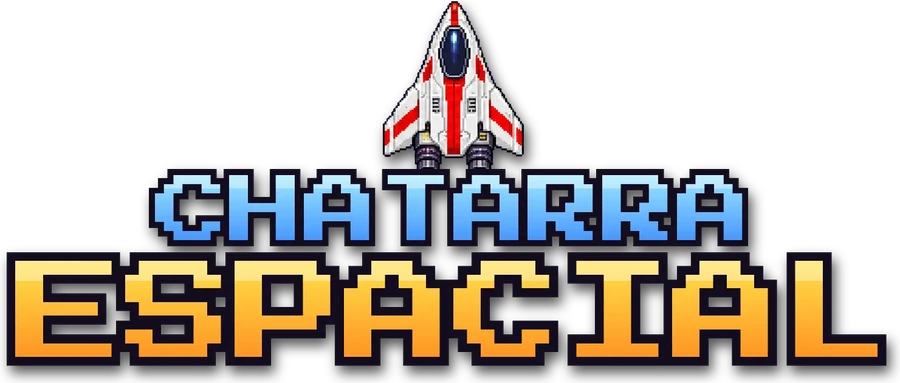
Toca la pantalla y sal a limpiar la órbita de Chile. Décadas de lanzamientos dejaron el cielo lleno de meteoritos y satélites rotos: la Cóndor-1 sigue de largo con su inercia y rompe cada roca en pedazos cada vez más chicos y rápidos. Derriba los ovnis que merodean —el chico apunta mejor y vale más— y, si te encierran, salta al hiperespacio y cruza los dedos. Cada oleada pasa por otro tramo de la órbita: Atacama, la Patagonia, Rapa Nui y la Antártica. En el celular se juega con un dedo: la nave queda en el centro, apunta hacia donde lo apoyas y dispara sola. En el teclado, como el arcade: gira, acelera y salta al hiperespacio. Tabla de récords como en el arcade.
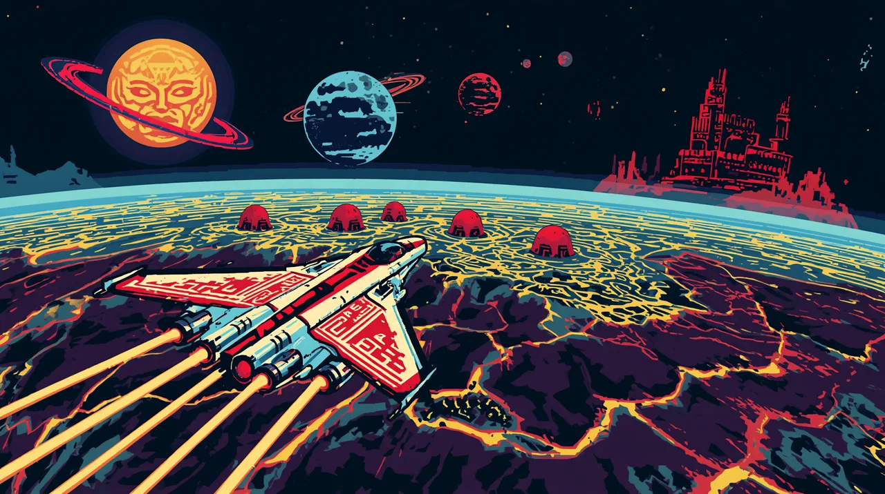
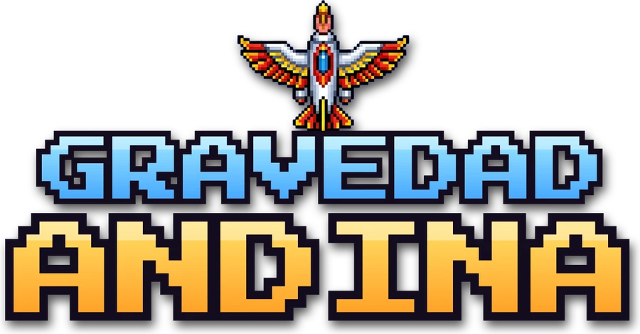
Toca y despega en el Cóndor. Unas fortalezas alienígenas ocuparon los planetas de tres sistemas andinos: Inti, Killa y Wenu. Esquiva el sol que te atrae, baja a cada planeta a pura gravedad y empuje, revienta los fortines que te disparan desde el suelo y recoge con el rayo tractor los estanques de litio, porque el combustible se acaba. Nueve planetas —el salar, el Licancabur, la mina de cobre, el Campo de Hielo, los fiordos, el desierto florido, Rapa Nui, las Torres del Paine y el bosque de alerces— y en cada sistema una Fortaleza Roja: dispara al reactor y escapa antes de que estalle. Después vienen universos con gravedad inversa y terreno invisible. En el celular deja el dedo en la pantalla: la nave apunta hacia él, empuja y dispara sola; con un segundo dedo prendes el escudo. Tabla de récords como en el arcade.

Toca la pantalla y defiende los cielos del norte. Una flota de criaturas de otro mundo —cóndores de cristal, chinchillas cósmicas y piedras vivas con geoglifos— baja en formación sobre el desierto de Atacama: mueve tu cañón láser, escóndete tras las pircas de piedra y derríbalos antes de que aterricen, que mientras menos quedan, más rápido bajan. Caza la medusa de cuarzo que cruza el cielo para sumar puntos extra. Cuatro noches en Atacama —los observatorios, el Valle de la Luna, el Gigante de Atacama y el llano de las antenas— y después la invasión sigue a la Luna, Marte, Europa y Titán, cada mundo con sus propias criaturas. En el celular solo deslizas el dedo: el cañón te sigue y dispara solo. Tabla de récords como en el arcade.
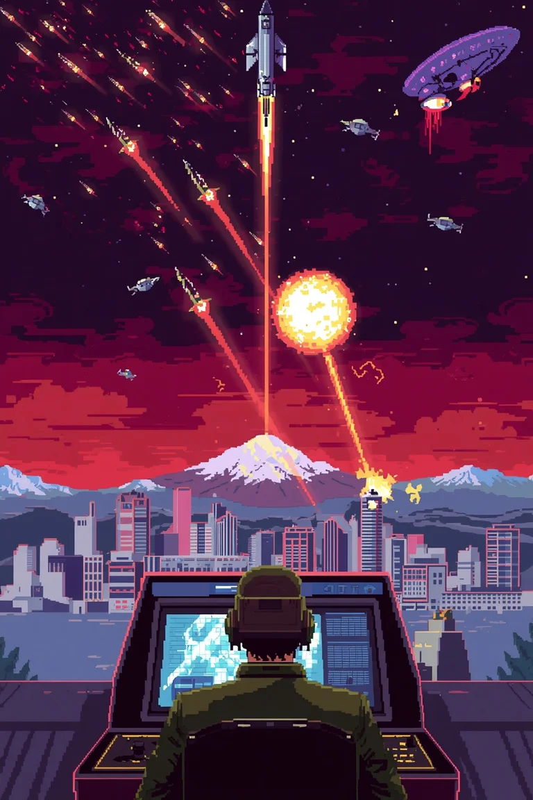
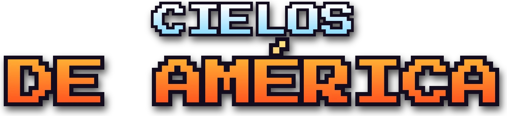
Una flota alienígena bombardea las capitales de Latinoamérica. Con tres bases antiaéreas y munición contada, defiende las seis ciudades: toca donde quieres que estalle cada disparo y la bola de fuego destruye todo lo que alcanza. Misiles que se dividen, bombarderos, satélites y sondas que esquivan, oleada tras oleada por Santiago, Buenos Aires, Lima, Bogotá, Ciudad de México, Quito, La Paz y Montevideo.

Toca la pantalla y arranca. Pantalla dividida: arriba vas tú y abajo el rival, por seis carreras de tres tramos con reloj: la campiña, el pueblo, el estadio, el puerto, el bosque y la ciudad de noche. Cada obstáculo se pasa a su manera: los neumáticos rápido, las vallas despacio, el muro en caballito, las mesas y las piletas de un salto, y los autos, el camión y el bus a fondo desde la rampa. Si te caes, el reloj corre al doble. En el celular se juega con los pulgares: el izquierdo apoyado acelera, atrás frena y arriba hace caballito; un toque a la derecha salta. También con el teclado.
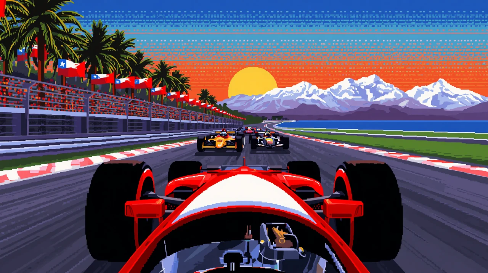
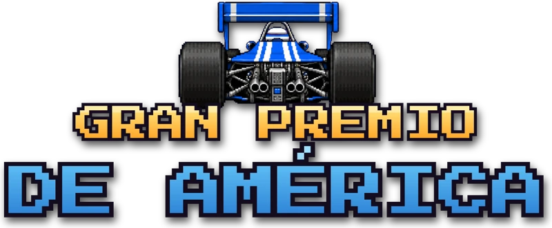
Toca y acelera. Un campeonato de Fórmula por ocho de los lugares más turísticos de Latinoamérica: Copacabana con el Cristo Redentor, la Riviera Maya y Tulum, la avenida 9 de Julio con el Obelisco, la ciudad amurallada de Cartagena, el Salar de Uyuni, el Valle Sagrado frente a Machu Picchu, las Cataratas del Iguazú y las Torres del Paine. En cada carrera largas contra siete pilotos de Brasil, México, Argentina, Colombia, Chile, Perú y Bolivia: pásalos para cargar el turbo, cuidado con los letreros y los charcos, y llega al podio para seguir sumando puntos hasta ser campeón de América. En el celular deja el dedo en la pantalla para acelerar, arrástralo a los lados para doblar, suéltalo para frenar y toca con otro dedo para el turbo. Tabla de récords como en el arcade.

Toca la pantalla y entra a la selva. Un comando solo contra los Jaguares Negros: cruza los ríos, vuela las chozas con granadas, rescata a los científicos amarrados y vence la oleada en la puerta de cada campamento. Cuatro etapas, de la orilla del río al templo perdido, con tabla de récords como en el arcade. En el celular se juega con un dedo: arrastra para moverte y dispara solo; la granada con el ícono o un segundo dedo.
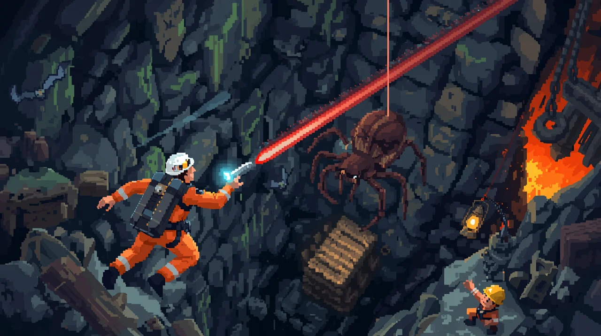
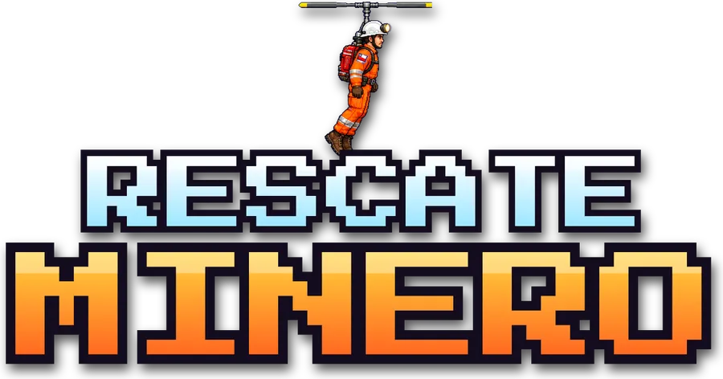
Toca y baja al rescate. Hubo derrumbes en cinco minas de Chile —El Teniente, San José, el Chiflón del Diablo en Lota, Chuquicamata y la azufrera de Aucanquilcha— y al fondo de cada galería hay un minero atrapado. Vuela por los piques con la mochila hélice, revienta los tabiques de madera con dinamita, quema arañas, murciélagos y polillas con el láser del casco, cuídate de las culebras que salen de la roca, de las vetas de lava y del agua con tentáculos, y llega antes de que se acabe la energía. Veinte niveles cada vez más hondos y puedes elegir en qué mina empezar. En el celular deja el dedo a un lado para caminar, desliza hacia arriba para la hélice y el láser dispara solo; la dinamita va deslizando hacia abajo, con el ícono o con un segundo dedo. Tabla de récords como en el arcade.
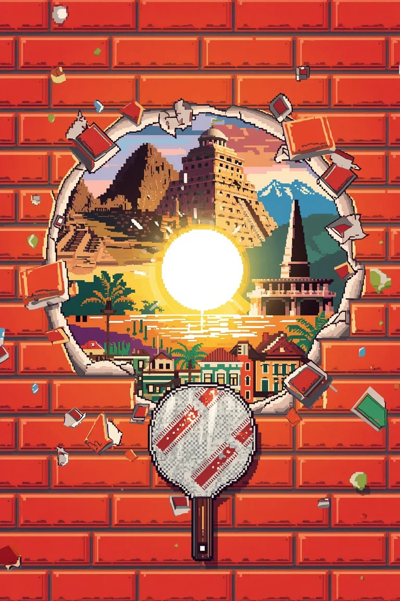
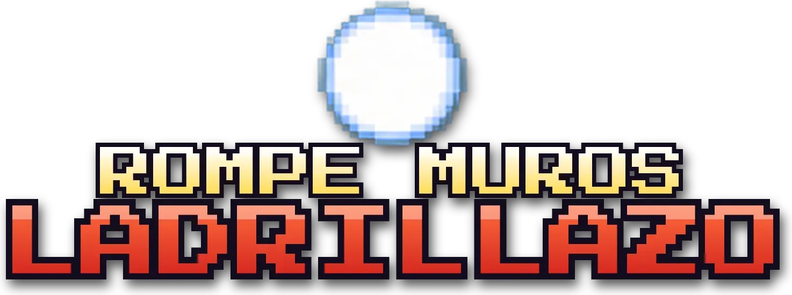
Toca y rompe los muros de Latinoamérica. Con la paleta y la pelota bota ocho filas de ladrillos —los rojos valen más—, que la pelota se acelera a cada rato y, si se cuela hasta el techo, la paleta queda a la mitad. Cada muro es un país, de sur a norte: Valparaíso, el Obelisco, Colonia del Sacramento, el Pan de Azúcar, el salar de Uyuni, Machu Picchu, las Galápagos, Cartagena, el Malecón de La Habana y Chichén Itzá. Tabla de récords como en el arcade. En el celular la paleta sigue tu dedo y un toque saca la pelota; en el computador, teclado o mouse.
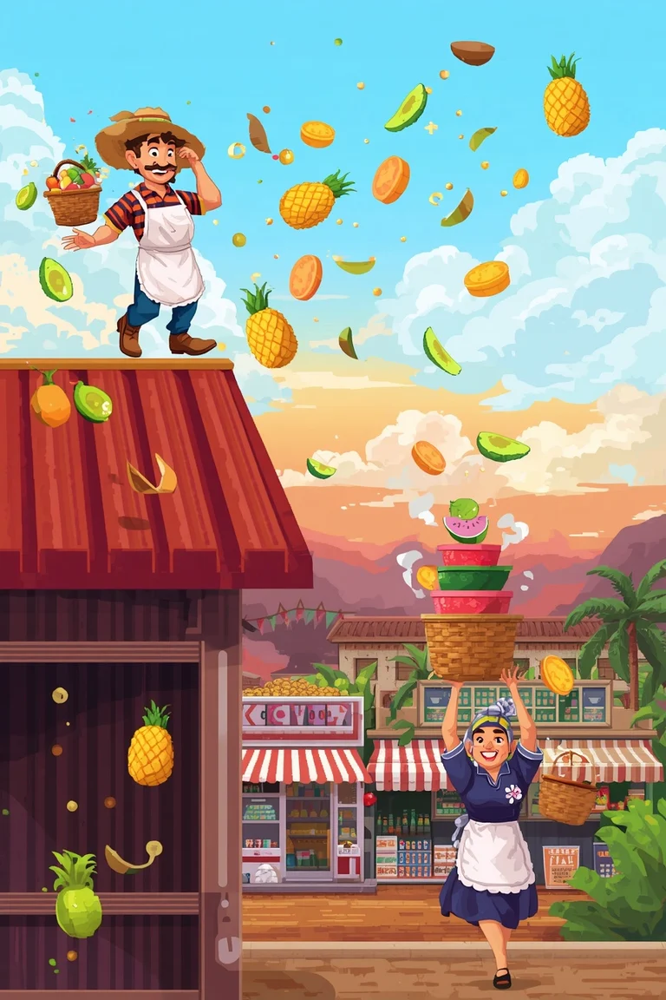
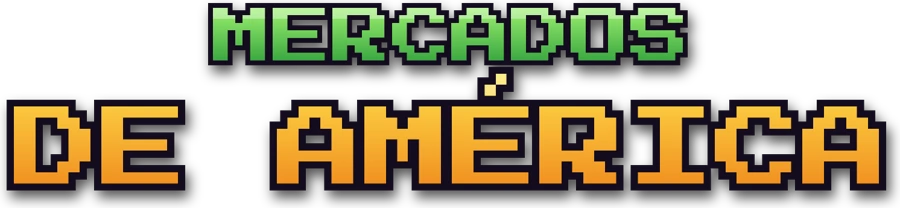
Desde el techo del mercado, el frutero lanza fruta sin parar y la casera la atrapa con sus tres canastos. Si se le cae una, revienta todo lo que viene en el aire. Cada tanda te lleva a otro mercado: La Vega, San Telmo, el Mercado 4, San Pedro en Cusco, Ver-o-Peso, Paloquemao, Chichicastenango y La Merced, cada uno con su fruta. Arrastra el dedo y toca para jugar.

Nuestro próximo juego ya se está cocinando.
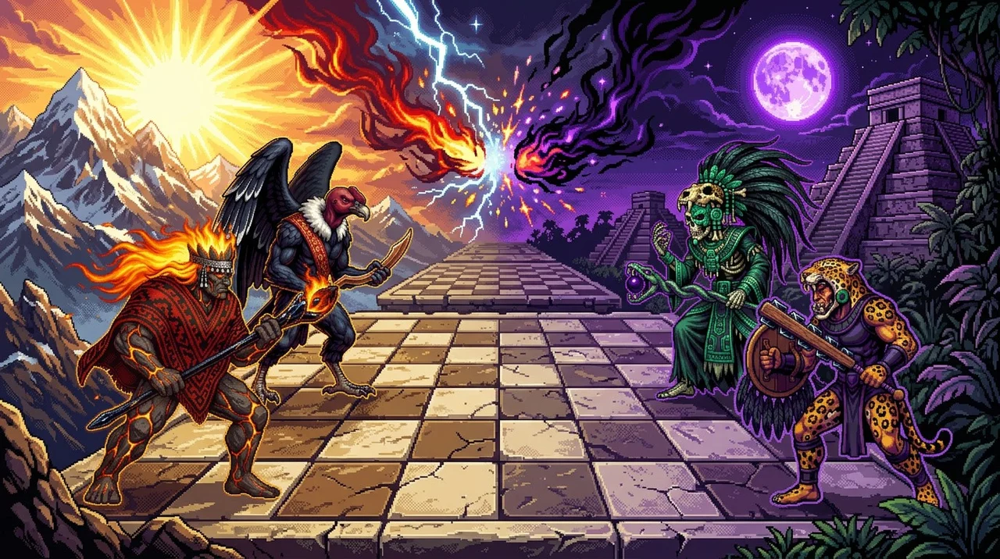
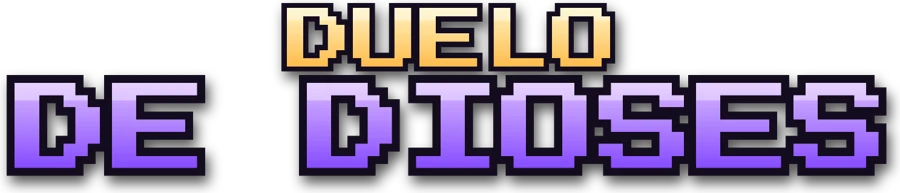
Toca y elige tu bando. La Luz del Sur —Pillán, el espíritu del volcán, Treng Treng, el Cóndor, la Pincoya, el Millalobo y los guerreros de piedra— contra la Sombra del Norte —el Señor de Xibalbá, la Serpiente de Obsidiana, Camazotz, el Ahuízotl, el Jaguar guerrero y los esqueletos del Mictlán— en un tablero sagrado. Cuando una criatura entra en la casilla de otra, no se la come: las dos pelean en una arena en tiempo real, y la que sobrevive se queda con la casilla, herida. De día pega más la Luz y de noche la Sombra; quien domine las tres huacas del centro, gana. En el celular toca una criatura y luego adónde va; en la pelea arrastra el dedo para moverte y toca para atacar. Contra la máquina o con un amigo en el mismo celular, cada uno en su mitad de la pantalla.
Horizonte 64 Software es un estudio independiente de videojuegos hecho en Latinoamérica.
Creamos juegos inspirados en las máquinas arcade y en los computadores de los 80 y 90: cortos, intensos y directos. Toca la pantalla y a jugar.
Todos nuestros juegos se pueden jugar gratis desde el navegador.
¿Te gustan nuestros juegos? Invítanos un café y ayúdanos a crear el próximo.
Donar con PayPal